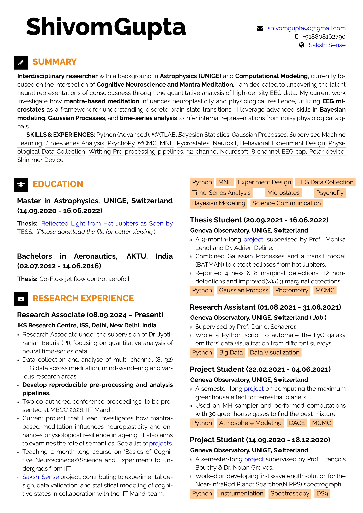
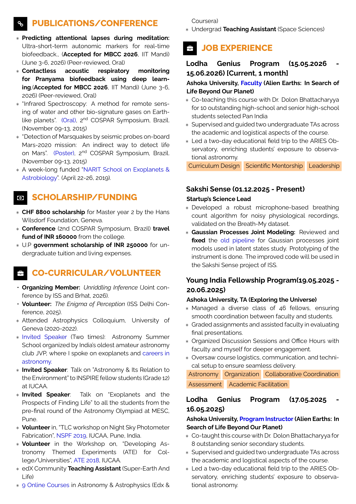

About Me

Growing up in a poverty-stricken community where schools were underperforming, and test scores were far below the state average, I never had the luxury of exploring the "what-ifs" of becoming a scientist. Hello! I'm Shivom Gupta, a researcher, educator, and science communicator driven by a lifelong curiosity about complex systems. My academic and professional journey has taken me across three seemingly different disciplines—Aeronautical Engineering, Astrophysics, and Cognitive Neuroscience—all connected by a common goal: understanding how intricate systems behave, evolve, and generate emergent phenomena.
I currently work as a Research Associate at the Institute of Science and Spirituality (ISS), Delhi, where I study the neural and physiological mechanisms underlying meditation, attention, and consciousness. My research focuses on EEG analysis, neural time-series modeling, microstate dynamics, autonomic physiology, and computational approaches to understanding human cognition. I am particularly interested in how modern data science and neuroscience can be used to investigate questions that have traditionally belonged to contemplative traditions and philosophy.
Before entering neuroscience, I completed a Master's degree in Astrophysics at the University of Geneva, Switzerland, where I worked at the Geneva Observatory on exoplanet research. My thesis explored the detection of reflected light from hot Jupiters using data from NASA's TESS mission. By combining Bayesian inference, Gaussian Processes, MCMC techniques, and transit models, I contributed to the detection and characterization of several planetary systems. This experience strengthened my passion for data-driven discovery and scientific programming.
Alongside research, I have spent nearly a decade working in science education and public engagement. I have taught astronomy and scientific thinking to students ranging from primary school learners to university fellows, developed educational resources, trained teachers, organized outreach programs, and contributed to initiatives associated with major international projects such as LIGO-India and the Thirty Meter Telescope. Through these experiences, I discovered that communicating science effectively is just as important as conducting the research itself.
I am also deeply interested in curriculum design and mentorship. Whether teaching exoplanet detection techniques to gifted high-school students, guiding undergraduate researchers, or designing inquiry-based learning experiences, I enjoy helping others develop the skills and confidence needed to engage with scientific research. I believe that education should not simply transfer knowledge but inspire curiosity, creativity, and critical thinking.
Technically, I work primarily in Python, with interests spanning statistical modeling, Bayesian inference, machine learning, signal processing, and scientific visualization. My current projects involve EEG analysis, meditation research, Gaussian Process modeling, physiological sensing, and open-source scientific workflows. At the same time, I continue to maintain an active interest in astronomy, exoplanets, planetary habitability, and the search for life beyond Earth.
This website brings together my research, teaching, outreach activities, publications, talks, and open-source projects. Whether exploring distant planetary systems or the dynamics of the human brain, I remain fascinated by one central question: how complex systems give rise to meaningful patterns, behaviors, and experiences.
Research
PUBLICATIONS & MANUSCRIPTS
Gupta, S. & Beuria, J. (in preparation).
Age-Related Alterations in EEG Microstate Dynamics During Audio-Visual Selective Attention and Attention Switching.
Target Journal: Frontiers in Human Neuroscience.
Sharma, M., Srivastava, P. C., Gupta, S., Kumar, P., & Beuria, J. (under review).
Toward HRV Markers of Mind Wandering During Meditation.
Peer-reviewed manuscript.
Srivastava, P. C., Gupta, S., Sharma, M., Beuria, J., & Kumar, P. (under review).
Contactless Acoustic Respiratory Monitoring for Pranayama Biofeedback Using Deep Learning.
Peer-reviewed manuscript.
Sharma, M., Srivastava, P. C., Gupta, S., Kumar, P., & Beuria, J. (under review).
Predicting Attentional Lapses During Meditation: Ultra-Short-Term Autonomic Markers for Real-Time Biofeedback.
Peer-reviewed manuscript.
CONFERENCE PROCEEDINGS & PRESENTATIONS
Sharma, M., Srivastava, P. C., Gupta, S., Kumar, P., & Beuria, J. (June 2026).
Predicting Attentional Lapses During Meditation: Ultra-Short-Term Autonomic Markers for Real-Time Biofeedback.
Mind, Brain and Consciousness Conference (MBCC 2026), IIT Mandi, India.
Peer-reviewed Oral Presentation.
Srivastava, P. C., Gupta, S., Sharma, M., Beuria, J., & Kumar, P. (June 2026).
Contactless Acoustic Respiratory Monitoring for Pranayama Biofeedback Using Deep Learning.
Mind, Brain and Consciousness Conference (MBCC 2026), IIT Mandi, India.
Peer-reviewed Oral Presentation.
Gupta, S. (November 2015).
Infrared Spectroscopy: A Method for Remote Sensing of Water and Other Biosignature Gases on Earth-like Planets.
2nd COSPAR Symposium, Foz do Iguaçu, Brazil.
Oral Presentation.
Gupta, S. (November 2015).
Detection of Marsquakes by Seismic Probes on-board the Mars 2020 Mission: An Indirect Way to Detect Life on Mars.
2nd COSPAR Symposium, Foz do Iguaçu, Brazil.
Poster Presentation.
INVITED TALKS & SCIENTIFIC OUTREACH
Gupta, S. (Invited Speaker).
Exoplanets and the Prospects of Finding Life.
Astronomy Olympiad Pre-final Camp, MESC, Pune, India.
Gupta, S. (Invited Speaker).
Astronomy and Its Relation to the Environment.
INSPIRE Programme, Inter-University Centre for Astronomy and Astrophysics (IUCAA), Pune, India.
Gupta, S. (Invited Speaker, Two Occasions).
Exoplanets, Modern Astronomy, and Careers in Astronomy.
Jabalpur Vigyan Parishad (JVP) Astronomy Summer School, India.
Teaching & Mentorship
My teaching philosophy combines scientific rigor with inquiry-driven learning. I have taught students ranging from primary schools to gifted high-school students, undergraduate researchers, and university fellows. My courses emphasize hands-on experimentation, quantitative thinking, and research-based learning.
COURSES
Role: Program Instructor
Course: Alien Earths: In Search of Life Beyond Our Planet
Institution: Ashoka University (Lodha Genius Programme)
Description:
Taught exoplanet detection, planetary habitability, biosignatures, transit photometry, BATMAN modeling, and observational proposal writing to gifted high-school students selected nationally.
Role: Teaching Assistant
Course: Exploring the Universe
Institution: Ashoka University, Young India Fellowship
Description:
Assisted in teaching astronomy and cosmology to a multidisciplinary cohort of fellows and coordinated assignments, discussions, and final projects.
Role: Instructor
Course: Basics of Cognitive Neuroscience
Institution: Institute of Science and Spirituality (ISS)
Description:
Designed and taught a month-long research training program for undergraduate interns from IITs and BITS Pilani covering EEG, ECG, GSR, experimental design, and scientific methodology.
Role: Outreach Educator
Institution: IUCAA & SPACE India
Description:
Conducted astronomy workshops, teacher training programs, EarthKAM projects, and outreach activities involving more than 50,000 students.
Curriculum Vitae


Download CV
Contact